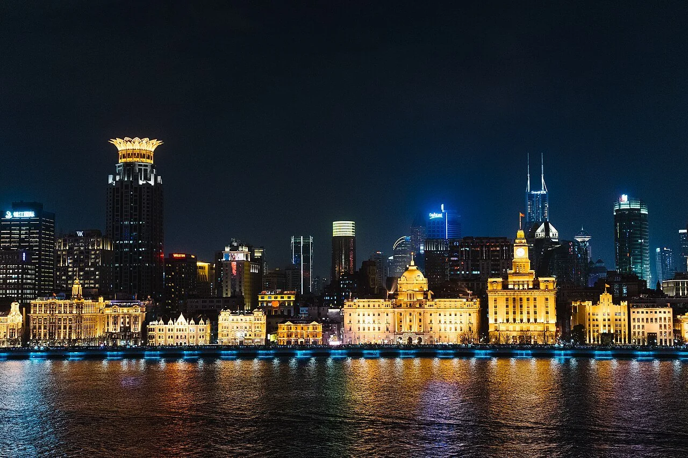
01
The Bund
Historic banks and hotels face Pudong's futuristic skyline across the Huangpu River.
Best time: sunset to night
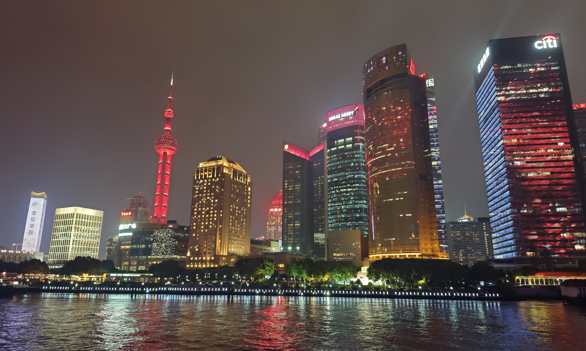
Tourism Website · Shanghai, China
Where heritage, everyday life and a modern skyline meet along the Huangpu River.
About Shanghai
Shanghai is a global metropolis shaped by river trade, neighbourhood lanes, Haipai culture, modern architecture and rapid urban development. This website is designed for first-time visitors who want a simple introduction to what makes the city distinctive.
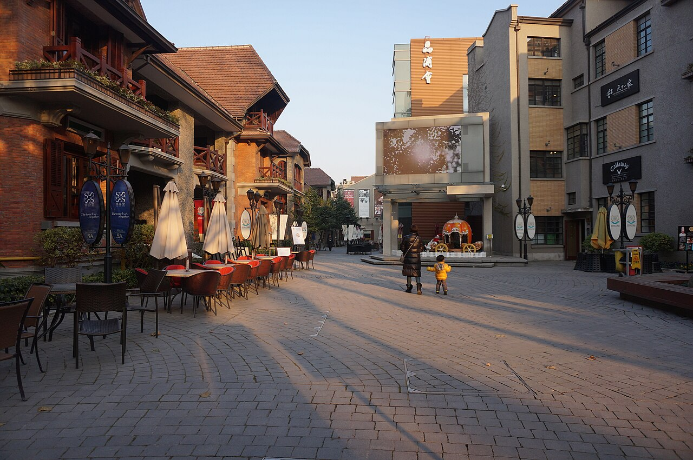
Instead of describing Shanghai through one skyline, these three ideas explain how the city is experienced at different scales.
The Huangpu River and Suzhou Creek connect Shanghai's historic waterfront with its modern skyline.
Shikumen and longtang neighbourhoods show a more intimate side of Shanghai beyond the famous towers.
Shanghai is known for mixing local traditions with international influences in fashion, architecture, food and entertainment.
Explore Shanghai
These locations give first-time visitors a balanced view of historic Shanghai, local streets and the changing waterfront.

Historic banks and hotels face Pudong's futuristic skyline across the Huangpu River.
Best time: sunset to night
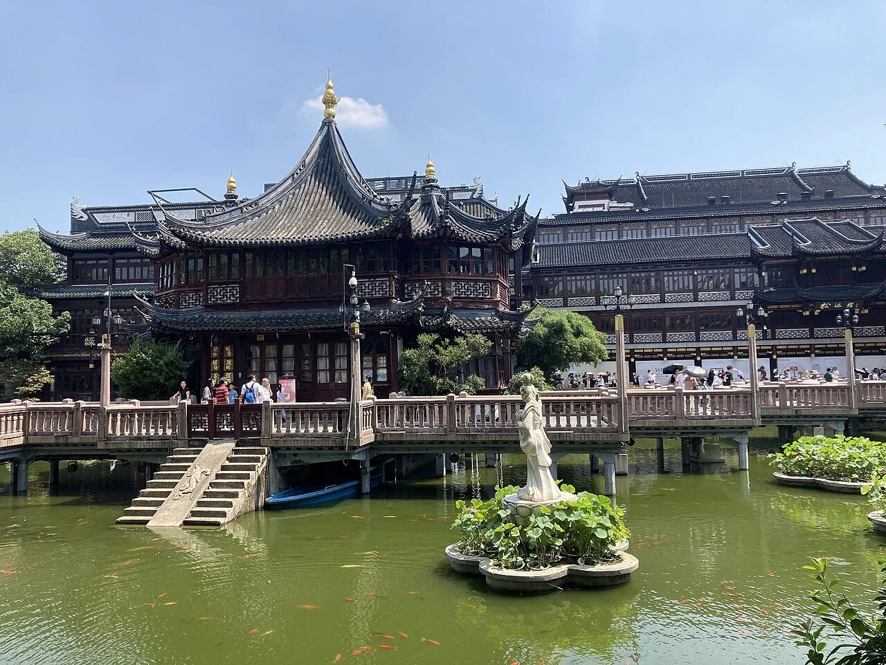
A classical Jiangnan garden of rockeries, ponds, pavilions and framed views inside the old city.
Best time: early morning
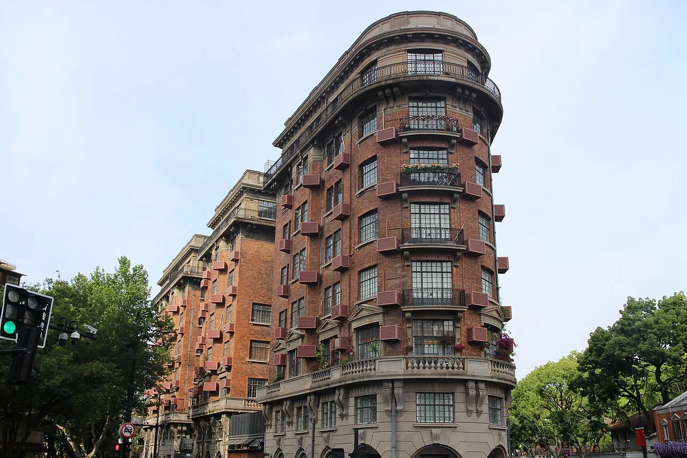
Plane trees, historic apartments and garden walls make this one of Shanghai's best streets for walking.
Best time: late afternoon
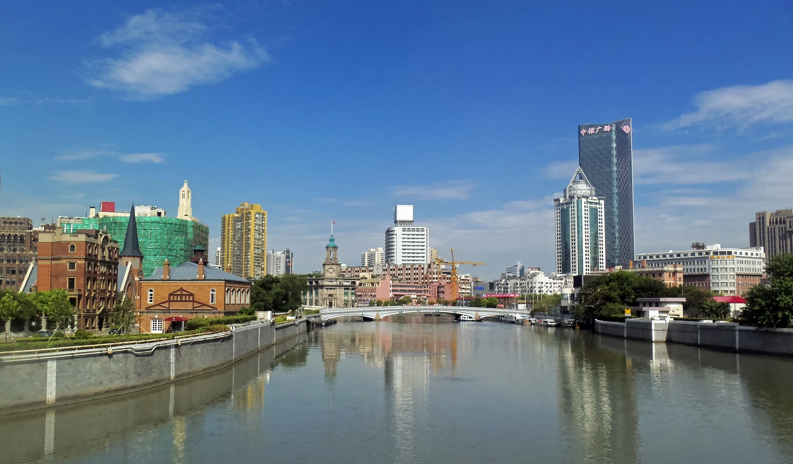
Bridges, warehouses and renewed riverwalks reveal Shanghai's industrial and urban history.
Best time: golden hour
Shanghai Culture
Two visual symbols help explain how Shanghai connects everyday neighbourhood life with twentieth-century urban modernity.
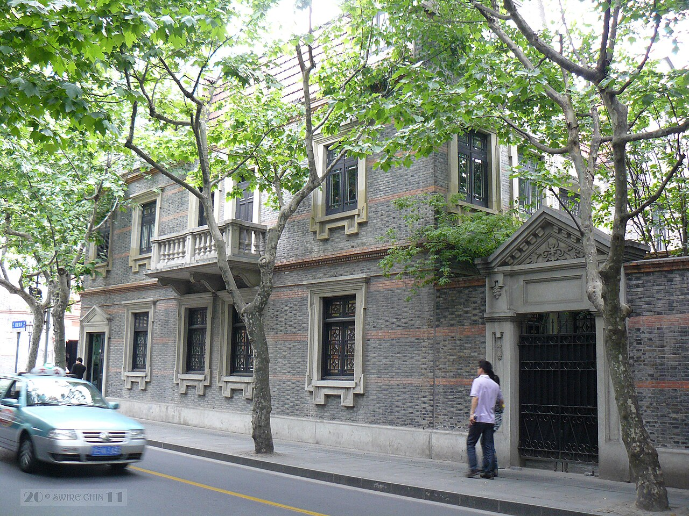
Brick walls, stone gates and shared lanes turn housing into a social space. Breakfast shops, neighbours and small businesses keep these streets connected to daily life.
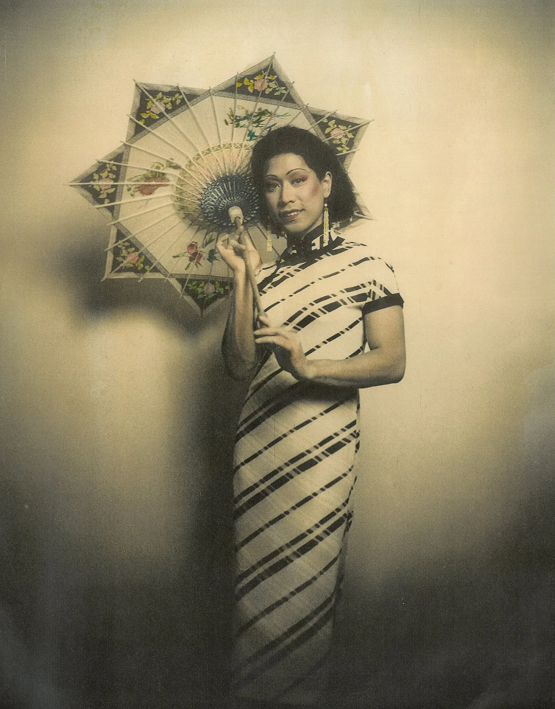
The qipao became closely associated with modern Shanghai through tailoring, photography, cinema and department-store culture in the early twentieth century.
Shanghai Cuisine
Shanghai food is often sweet-savoury, but texture and timing are just as important. These dishes are easy starting points for visitors.
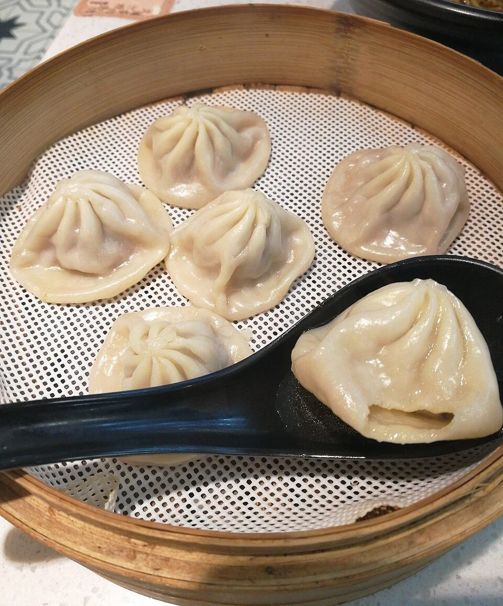
Thin wrappers hold hot soup and savoury filling. Lift carefully, make a small opening, sip, then eat.
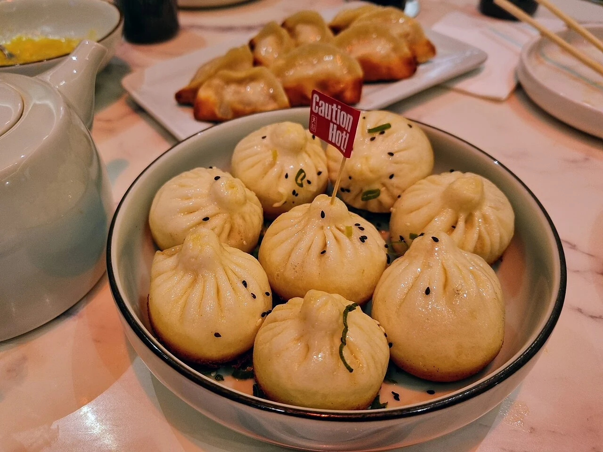
A crisp pan-fried base, soft top and juicy filling make this a classic Shanghai breakfast choice.
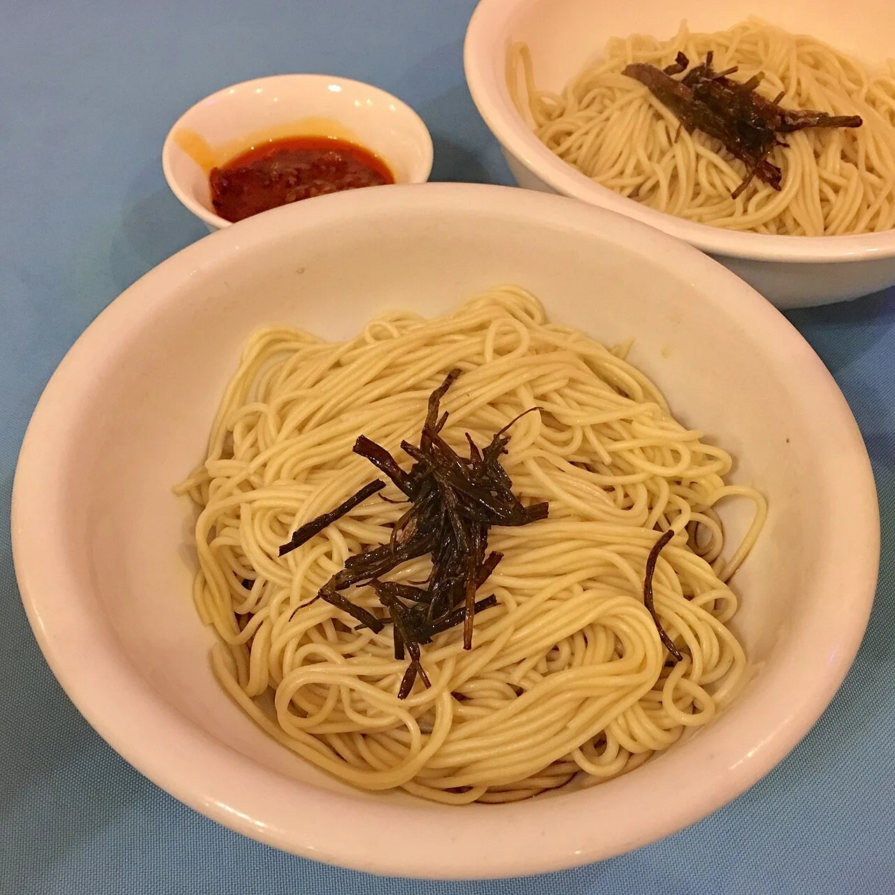
Noodles coated with soy sauce and aromatic scallion oil show the restrained, fragrant side of local cooking.
Multimedia · Shanghai in Motion
This Shanghai Tourism Festival promotional video adds real movement, atmosphere and destination imagery to the website, helping visitors experience Shanghai beyond still photographs.
Video: Shanghai Tourism Festival Promotional Video · Meet in Shanghai. If the embedded player is restricted by the browser or network, open the original video using this link.
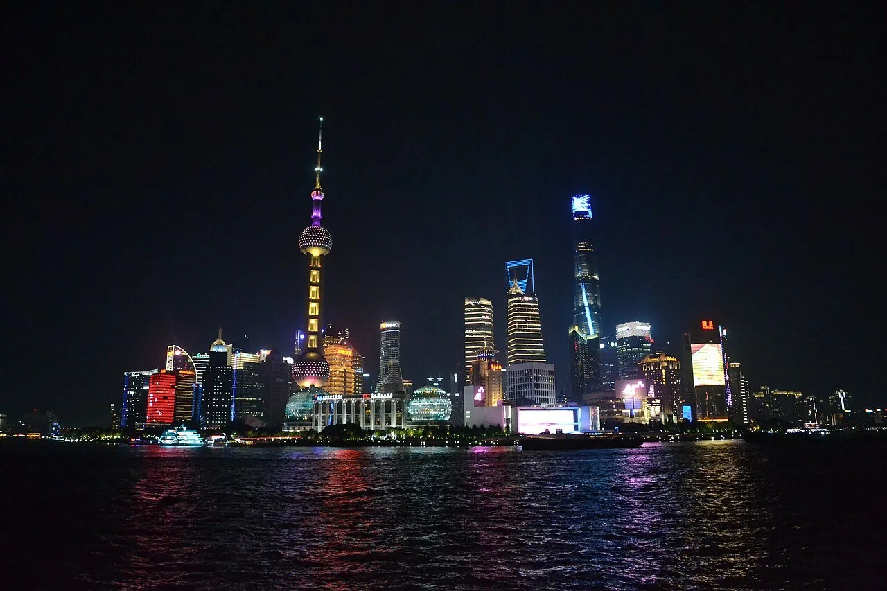
After Dark
The Bund becomes theatrical, Pudong becomes a field of reflections and the river connects both skylines in one view.
Contact
This display-only form demonstrates a simple HTML contact form as part of the website project. It does not send personal information to a server.